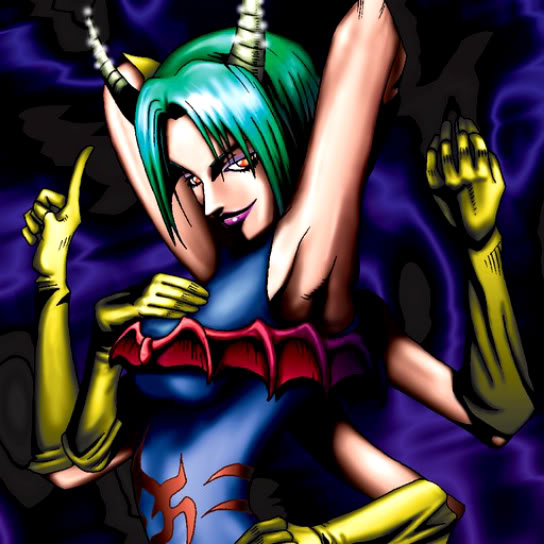

Vishwar Randi

Description: "When this card is flipped face-up, strengthens all Succubus Knights by 300 points."
STATS
ATK: 900
DEF: 700DECK COST
Deck Cost per Card: 21EFFECT NOT IMPLEMENTED
Fusion List (25 Possible Fusions)
- Vishwar Randi + Abyss Flower = Queen of Autumn Leaves
- Vishwar Randi + Armaill = Charubin the Fire Knight
- Vishwar Randi + Blackland Fire Dragon = Sword Arm of Dragon
- Vishwar Randi + Celtic Guardian = Dark Elf
- Vishwar Randi + Charubin the Fire Knight = Flame Swordsman
- Vishwar Randi + Dancing Elf = Celtic Guardian
- Vishwar Randi + Dark Gray = Nekogal #2
- Vishwar Randi + Dharma Cannon = Cyber Soldier
- Vishwar Randi + Dragon Zombie = Sword Arm of Dragon
- Vishwar Randi + Fire Eye = Charubin the Fire Knight
- Vishwar Randi + Fire Reaper = Zombie Warrior
- Vishwar Randi + Flame Manipulator = Charubin the Fire Knight
- Vishwar Randi + Goddess with the Third Eye = Dark Witch
- Vishwar Randi + Hourglass of Life = Dark Witch
- Vishwar Randi + Jinzo #7 = Cyber Soldier
- Vishwar Randi + Laughing Flower = Queen of Autumn Leaves
- Vishwar Randi + Lesser Dragon = D. Human
- Vishwar Randi + Man Eater = Queen of Autumn Leaves
- Vishwar Randi + Mechanical Snail = Cyber Soldier
- Vishwar Randi + Milus Radiant = Nekogal #2
- Vishwar Randi + Petit Dragon = Dragon Statue
- Vishwar Randi + Phantom Ghost = Zombie Warrior
- Vishwar Randi + Pot the Trick = Mystical Sand
- Vishwar Randi + The 13th Grave = Armored Zombie
- Vishwar Randi + Wings of Wicked Flame = Flame Swordsman